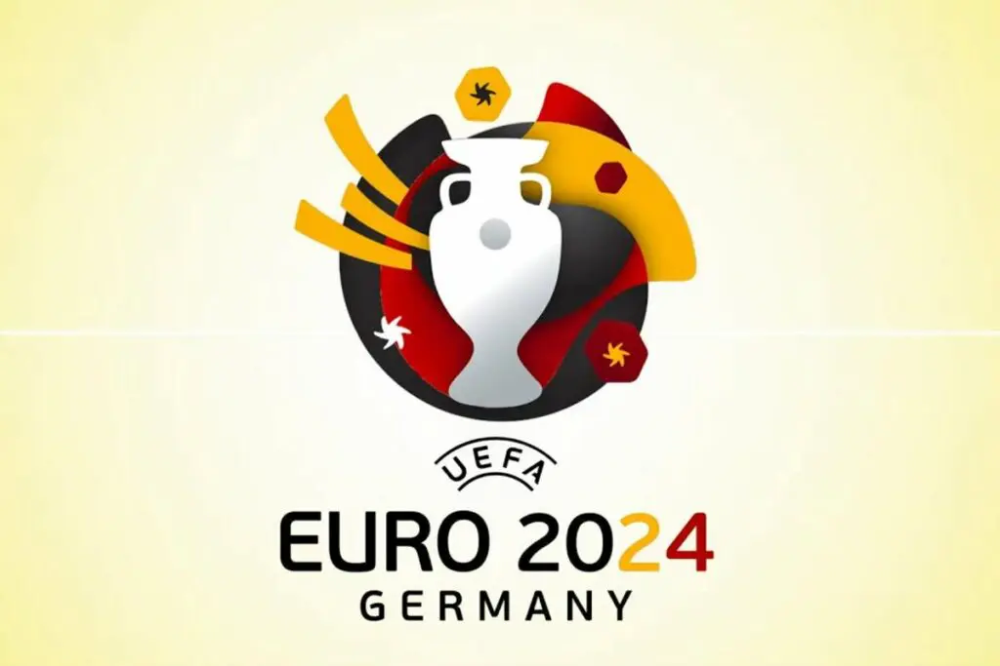
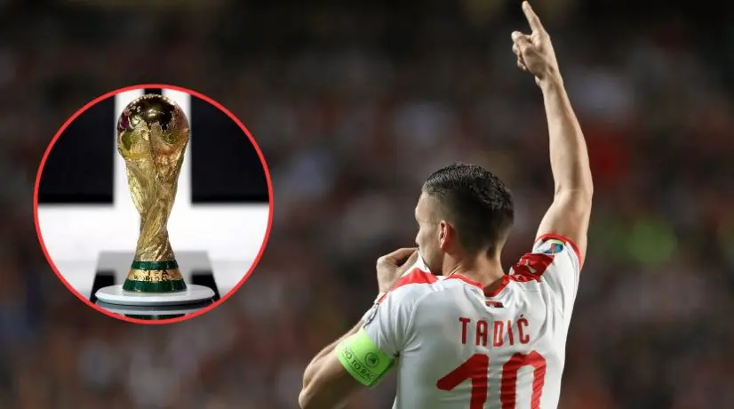

.webp)
.webp)
.webp)
.webp)
10 freebet-a do 5.000 dinara
Sve za online sportsko klađenje u Srbiji na jednom mestu
Kladionice
POGLEDAJ SVE
Škola klađenja
ABC
Potrebna ti je pomoć? Navigacija će ti biti mnogo lakša kroz ABC primer!
Tipovi

Aleksandar Krstic
Ljubitelj fudbala i tenisa (LaLiga, Premijer Liga, ATP, WTA...)
FUDBAL
Vesti Hem je "zabagovao", dok se Lester diže iz pepela
London Stadium (London) @ 12.11.2022.
SVI POSTOVI
☑
Kladionice TV
Trendovi
KOŠARKA
Grci ili Letonci možda obezbeđuju SP?
Heraklion Arena (Heraklion) 18:00 @ 11.11.2022.
SVI POSTOVI
☑
Aleksandar Krstic
Ljubitelj fudbala i tenisa (LaLiga, Premijer Liga, ATP, WTA...)
KOŠARKA
Selta tone sve dublje?
Kampo de Futbol de Valjekas (Madrid) 19:00 @ 10.11.2022.
SVI POSTOVI
❌

Nemanja Dojčinovic
Košarka NBA, poeni igrača, Over/under i hendikep svi sportovi
FUDBAL
Totenhem bez skoro kompletne navale
Tottenham Hotspur Stadium (London) 17:30 @ 16.11.2022.
SVI POSTOVI
☑
TIPOVI
Kladionice.tv — sve o online klađenju u Srbiji na jednom mestu
Industrija kocke i kada je specijalno u pitanju sportsko klađenje stalno raste i razvija se u raznim pravcima. Na hiljade kladionica širom sveta bori se za igrače i izlazak na nova tržišta. Sa druge strane, postoji mnoštvo potencijalnih novih korisnika usluga kladionica od kojih velika većina ne zna u kakav se svet upušta i zato je svaka pomoć dragocena. Savremeni svet vezan za sportsko klađenje u kojem smo mi trenutno aktivni, jedan je vrlo dinamičan svet u kojem treba brzo razmišljati i postupati. Informacija je zaista puno i mnogim igračima to može biti zbunjujuće. Bonusi, promocije, nova tržišta, sve rasprostranjenije uživo klađenje, kladionice sa svojim prednostima i manama, statistike, klubovi, metodi klađenja, vođenje računa o novcu.. Za sve to možete potpuni računati na naš iskusni tim i srpsku verziju sajta Kladionice.tv koji će Vam na najbolji način pomoći da budete dobro informisani i kladioničarski potkovani.
Postani član Mozzart ekipe!
50%, 100%, 200% bonusa
na 1. 2. i 3. depozit
KLADI SE
Šta sve možete pronaći na sajtu Kladionice.tv
Na našoj platformi naići ćete na sve vezano za sportsko klađenje. Omogućeno Vam je da pročitate recenzije svih kladionica u Srbiji i kroz te redove saznate o svim mogućnostima koje one nude. Takođe, moći ćete da se edukujete o različitim igrama, pravilno shvatite azijski i evropski hendikep , over/under klađenje. Možda se fokusirate na neki sport specijalno, jer na našem sajtu ima reči o svakom sportu zasebno. Uz nas ćete sigurno bolje shvatiti kako funkcioniše ovaj biznis i kako da se pametnije kladite. U ovom uvodnom tekstu ćemo se fokusirati uopšteno na kladionice, bonuse koje nude, postupak registracije i Školu klađenja koju uporedo razvijamo na stranici. Sve o tome kako da se kladite. Više o svemu ovome možete pročitati u specijalizovanim tekstovima u okviru sajta Kladionice.tv
Fantastičan Bonus dobrodošlice
100% do 50EUR
prvog depozita
KLADI SE
Kladionice i sportsko klađenje Srbija
Kladionice.tv nudi sadržajan pregled svih kladionica koje posluju na ovom prostoru i imaju dozvolu za obavljanje delatnosti igara na sreću. Važno je napomenuti da su sve platforme za sportsko klađenje koje su ovde ponuđene, licencirane. U ovom poslu ima dosta kompanija koje i nemaju baš dobar kredibilitet i negde su do pola istražene i gde nije sve potpuno regulisano. Osnovna funkcija ovog sajta je da vam da korisne savete o tome i približi prednosti i mane platformi koje ćete koristiti za klađenje. Između ostalog, informacije o popularnosti kladionica, postupku registracije, načinu uplate depozita i isplate novca kao i trajanju ovih transakcija, ekspeditivnosti korisničke podrške, ponudi igara i kvotama, korisničkom interfejsu i mnogo toga drugog. Vrlo je bitno kako ćete se snaći i postupiti u eventualnim sporovima jer kompanije koje organizuju sportsko klađenje uvek traže način da se izvuku sa minimalnim gubicima i vešti su da zadrže novac ukoliko načinite i najmanji prestup. Zato uvek trebate pročitati pravila i uslove korišćenja pre nego što se registrujete.
Vrlo bitan faktor koji diže rejting kladionica jesu Bonusi dobrodošlice. Njima se takođe podrobno bavimo u samim recenzijama. Kladionice često menjaju pravila i uslove Bonusa i naše je da to na vreme ažuriramo i obavestimo Vas. Bitna stavka za igrače su svakako i kvote i ponuda, verovatno i sama suština svega. Naše je da vas pravilno izveštavamo o razlikama u kvotama i ponudi određenih kladionica, upoređujemo ih i vidimo šta svako od njih nudi na tom polju. Uz nas ćete napraviti dobar izbor za online klađenje i pronaći kladionicu i tržišta koja Vam najviše odgovaraju. Ono čime smo se još pozabavili jeste korisničko iskustvo i navigacija na sajtu. Kod nekih kladionica sve ide glatko, kod drugih malo sporije. Važno je proveriti klađenje uživo i da li se događaju sitni bagovi. Na osnovu sopstvenog iskustva na najtačniji način prenećemo celokupan doživljaj vezan za sportsko klađenje generalno.
Registruj se na MaxBet!
200% Bonusa
na prvi depozit
KLADI SE
Proces online sportskog klađenja u Srbiji
Od davnina klađenje je postalo jedan od omiljenih vidova zabave za ljude različitih narodnosti, starosnih grupa i profila. Uopšteno, sportsko klađenje predstavlja aktivnost predviđanja rezultata sportskih događaja uz postavljanje određenog uloga.
Učestalog sportskog klađenja zavisi od kulture u određenom okruženju, pri čemu je većina opklada vezana generalno vezana za sportove poput fudbala, košarke, tenisa, boksa, američkog fudbala, hokeja, bejzbola, auto moto trka, odbojke, rukometa ali i nekih sportova koji su manje poznati. Nema mnogo razlike sa podnebljem u Srbiji. Napredak internet tehnologije u sprezi sa promocijama koje nude kladionice učinio je celokupan doživljaj još više uživajućim.
U ovom tekstu verzije našeg sajta Kladionice.tv za kladionice u Srbiji istražićemo različite vrste klađenja i pokriti sve najpopularnije sportove za online klađenje. Iako to nije moguće sažeto predstaviti kroz samo jedan tekst probaćemo da vam prenesemo osnove a u specijalizovanim tekstovima na pojedinačne teme koji se nalaze na sajtu naći ćete mnogo toga više.
Sjajna ponuda za sve nove korisnike
100% Bonusa
na max 25 EUR
KLADI SE
Šta je sportska opklada?
Prosto rečeno radi se o sporazumu između kladioca i sportske kladionice kojim se kladilac prihvatajući pravila kladonice i ponuđene kvote opklađuje na ishode sportskih događaja. Odabir mečeva i igara je na njemu. Sa druge strane celokupan pojam Sportsko klađenje je značajno kompleksniji i morate razumeti mnoštvo različitih pojmova oko njega kako biste bili što uspešniji.
Učestvujući u klađenju vi prihvatate takođe i proviziju koju kladionice naplaćuju kroz unapred određenu maržu koju obezbeđuju matematičkim algoritmima preko svojih kvota. Pravilo Kuća uvek dobija mnogo je teže ovde sprovesti nego na Kazino igrama i oni koji se bave pametnim klađenjem mogu to često eksploatisati.
Kvote su fundamentalni segment svake platforme za sportsko klađenje u svetu pa i u Srbiji. Da nema kvota ne bi moglo ni da postoji sportsko klađenje. One predstavljaju verovatnoću da će se neki rezultat u sportskom događaju desiti. U sportskom klađenju možete naići na sijaset sportskih događaja, igara i ponuđenih kvota za potencijalne opklade.
Pre nego što krenemo dalje sa tekstom, morate znati i razumeti mnogo više o tome kako kvote koje nude kladionice zapravo funkcionišu.
Proces registracije – odeljak
Tekstovima u ovom delu sajta želeli smo da vam preciznije prikažemo postupak registracije kod svakog sajta za sportsko klađenje. Generalno, to je možda i jedan od segmenata koji je krajnje identičan kod svih kladioničarskih platformi i razlika je samo u nekim detaljima, međutim za nekoga ko prvi put otvara kladioničarski račun sigurno će želeti od pravog izbora da sazna šta popunjava i kako da sve prođe bez ikakvog problema.
Mobilne aplikacije – odeljak
Navike ljudi koji se klade dramatično su se promenile u poslednjih desetak godina. Od nekadašnje navike posećivanja poslovnica, popunjavanja tiketa gledajući ponudu iz biltena i uplate na licu mesta još je preostalo, ali u mnogo manjem obimu. Sada su pametni telefoni preuzeli stvar i istraživanja pokazuju da 90% klađenja dolazi na ovakav način. Kladionice ulažu dosta novca u razvoj ove tehnologije. Iako su aplikacije za Android i iOS zabranjene na Store mogu se skinuti na sajtovima za klađenje. U ovim tekstovima prenećemo Vam korisničko iskustvo Aplikacija za oba operativna sistema za svaku platformu za sportsko klađenje pojedinačno.
Preuzmi sjajan Bonus dobrodošlice!
10 freebet-a
do 5.000 dinara
KLADI SE
Bonusi kladionica – odeljak
Većina novih korisnika za online klađenje i sajtove koji priređuju igre je čula putem reklama na internetu, televiziji, drugim sredstvima oglašavanja na kojima uglavnom propagiraju svoje Bonus dobrodošlice i razne druge bonuse i promocije uz pomoć lica koja su dobro poznata u javnom životu. U našoj sekciji Bonusi Kladionica saznaćete šta svaka kladionica nudi. O početnim bonusima na prvi depozit, o drugim programima lojalnosti za stare korisnike i razne druge video promocija poput povećanih kvota, refundiranja novca itd koji bi trebalo da sportsko klađenje učine isplativijim.
Početni Bonus na prvi depozit
Početni bonus sa određenom sumom na % od Vašeg prvog depozita jeste najčešći vid ponude Bonus sredstava od strane kladionica i vrlo je popularan kada su sportsko klađenje i Srbija u pitanju. Recimo bonus od 100% sa maksimalnim iznosom od 10.000 dinara označava da ćete dobiti za svaku depozit sumu do ovog limita još toliki iznos Bonus sredstava. Obično postoje neki uslovi kao recimo da morate da odigrate 4 para na tiketu sa minimalnom kvotom 1.40 i slično.
Bonus bez depozita
Još jedan vrlo omiljen vid promocije kod igrača kada je sportsko klađenje u pitanju. Dobijate bonus na registraciju uglavnom u vidu nekog poklona od 200,300 čak i 500 dinara ukoliko se kladite online. Depozit nije neophodan već samo da se registrujete i napravite korisnički račun. Međutim, da biste mogli da podignete dobitak takođe ćete prilikom klađenja morati da ispoštujete neke uslove koji su malo rigorozniji nego kod Bonusa na prvi depozit.
Ekskluzivni Bonusi
Postani član Meridian kladionice!
1500 dinara
bez depozita!
KLADI SE
Ovo su uglavnom personalizovane ponude kladionica određenim igračima u vidu besplatnih opklada, povraćaja novca, pa čak i nekih novčanih nagrada.
Cash Back Bonusi (Utešna nagrada)
Mnoge kompanije koje organizuju sportsko klađenje u Srbiji opredelile su se za ovu promotivnu kampanju prethodnih desetak godina u sklopu ponude za online klađenje koju nude. Ukoliko promašite jedan par na tiketu i imate određenu pogođenu kvotu koja je dovoljna, dobijate u odnosu na to koliku ste kvotu pogodili povraćaj novca koji može biti od duplog do dvadesetostrukog pa čak i pedesetrostrukog iznosa na uplatu tiketa.
Free Bet (Besplatna opklada)
Kao što se iz samog naziva vidi u pitanju je opklada bez bilo kakvog uslova za određeni novac koji dobijete od strane online kladionica 200-500-1000 dinara. Uglavnom sa Free Bet možete da se kladite online samo na neko određeno tržište i sa te strane je ograničeno. Takođe, ako dobijete u većini slučajeva uzimate samo profit mada su neke kladioničarske platforme pokrenule kampanju da vam se i osnova free bet uplate uvrsti u balans na računu što je sjajna stvar.
Refundiranje prve opklade
Ovo je Bonus za klađenje koji kladionica daje novoregistrovanom korisniku za prvu opkladu. Bonus se aktivira samo ako je prvi tiket promašen i korisnik će dobiti apsolutno ceo iznos za koji je odigrao prvu opkladu. Znači, možete da se kladite ponovo. Na ovakav vid Bonusa postoji limit u visini refundiranja.
Veće kvote
Takođe jedna od vrlo čestih promocija. Organizatori sportskog klađenja se odlučuju da vam za neke mečeve daju veće kvote nego što je to slučaj sa običnom ponudom. Moguće je da to bude bez uslova ali i da pored tih odabira ubacite još nekoliko mečeva iz standarnde ponude za klađenje.
Postani član Melbet i uzmi Bonus!
100%
Na prvi depozit do 100 EUR
KLADI SE
Škola Klađenja – odeljak
Za one bez puno iskustva kada je u pitanju klađenje, ali čak i za one koji imaju neku osnovu i žele da nauče više razvili smo sekciju sa Školom za klađenje. To je svojevrsna enciklopedija klađenja gde će sve biti objašnjeno vrlo prostim rečnikom bez nekih suvišnih pojmova. Od tumačenja igara i hendikepa do strategija klađenja i savetima i trikovima šta biste mogli da izbegnete a šta da praktikujete. Naš tim će se potruditi da Vam izađe u susret čak i na postavljena pitanja za teme koje nisu obuhvaćene.
Sportovi
U ovom delu možete saznati na koje sve sportove možete da se kladite. Od onih osnovnih sportova poput fudbala, košarke, tenisa do krajnje egzotičnih poput stonog tenisa, pikada, snukera ali i sve više razvijenog Esports na koji takođe postoji ponuda za sportsko klađenje.
Vrste tržišta za sportsko klađenje
Koje sve igre nudi kladionica za određeni sport su nešto što zanima svakog prosečnog kladioca i ovde ćemo izvestiti o onim najosnovnijim igrama poput konačnog pobednika i golova i kakve su kvote tu do onih tržišta koja su nevidljiva golem oku i do kojih se treba kopati malo dublje ali koja mogu da budu jako zanimljiva i sa velikim kvotama.
Postani član Megapari kladionice!
100%
Do 100 EUR prvog depozita
KLADI SE
Saveti
Pošteno rečeno, veliki broj ljudi se kladi bez rezona, nasumice, iz strasti i navijačkih ponuda ne obraćajući previše pažnje na detalje i da se razumemo ovo je potpuno ok. Ali samo ukoliko se kladite za manje sume novca ili sume novca koje su prilagođene visini Vaših prihoda. Zabava mora da se plati a kladionice su kompanije koje organizuju zabavu. Teško da ćete ovako dugoročno biti uspešni kada je u pitanju sportsko klađenje. Za to će biti potrebno malo više odricanja i stavljane zadovoljstva po strani a isticanje nekih drugih elemenata poput strpljenja, discipline, informisanosti, traženja vrednosti (Value) u opkladama, hvatanje najvećih kvota samim i tim i mnogo otvorenih računa u raznim kladionicama. Ima još mnogo toga. Put do uspešnog kladioca je vrlo dug i naporan.
Lakša mogućnost za ostvarivanje dobrog rezultata i uspešnost kada je sportsko klađenje u pitanju je praćenje stručnjaka-tipstera u pojedinim oblastima (sportovima, ligama…) koji stalno imaju dobre informacije i stvaraju prednost nad kladionicama. Na Kladionice.tv ćete moći pratiti besplatno razne vesti a u budućnosti i različite analize sportskih događaja na koje je moguće klađenje. Vrlo je bitno razgraničiti dobre od prosečnih i loših analitičara a to ćete znati samo ako imate uvid u rezultate i malo duže vremena pratite određenog Eksperta. Uglavnom se plaća sadržaj tipstera koji se dobija u kratkom vremenskom roku sa pravom informacijom ali pre nego što se upustite u taj poduhvat raspitajte se i izvršite proveru bilo da se kladite online ili na uplatnom mestu.
Kreiraj nalog u William Hill kladionici!
Free Bet
KLADI SE
Kvote kladionica i kako one funkcionišu?
U ovom kontestu možda je odlično da iskoristimo pojam – izgledi. Kvote predstavljaju izgled da će se nešto desiti, u ovom slučaju u sportskom događaju. Možete nabrojati bezbroj izgleda za bilo kakvu situaciju u životu. U sportskom klađenju kvote projektuju dve stvari, verovatnoću ishoda i isplatu koju možete dobiti od pogotka tog ishoda. Trenutno su u svetu najpopularnija 3 formata kvota, decimalne, razlomci i američke kvote. Kroz mnoge tekstove uglavnom ćemo se fokusirati na decimalne koje koristi 90% igrača (sem onih u Britaniji i SAD). Ipak, objasnićemo ih sve pobliže ovde.
Decimalne kvote
Ovo je definitivno najlakši za razumevanje i naširoko prihvaćen oblik predstavljanja kvota koji se odomaćio u Srbiji od samog nastanka kladionica na ovom prostoru, otkad je sportsko klađenje u opticaju. Ovo su azijske kvote, evropskih kladionica (sem britanskih koje koriste razlomke) i ostatka sveta osim SAD koje imaju svoj sistem kvota. Označavaju se kao što sam naziv kaže decimalnim brojevima sve do stotih(2 mesta iza decimale, osim nekih azijskih kladionica koje imaju 3 pa i 4 mesta iza decimale)
Ako je vaša opklada uspešna direktno množite ulog ovim decimalnim brojem i sve što preostane kada oduzmete početni ulog predstavlja Vaš profit.
Uzmimo za primer londonski derbi Arsenal – Chelsea i kvote za njega. Kvote na pobedu Arsenala su 3.20 kvote na pobedu Chelsea 2.20 a kvote na remi 3.40. Ovo prosto znači da je Chelsea favorit i da ukoliko se kladite na njih za 1000 dinara možete dobiti 2200. Prema tome zarada je 1200 dinara. Ukoliko se kladite na Arsenal koji je autsajder na 1000 dinara možete dobiti 3200 u slučaju pobede domaćeg tima. Ukupan profit je 2200 dinara. I na kraju izgled za koje su predložene najveće kvote i za koji su najmanje šanse da se desi jeste remi. Ukoliko ovde uplatite 1000 dinara dobićete 3400 što predstavlja iznos od 2400 zarade.
Iz ovoga primera možete da steknete uvid kako se određuju ishodi za koje je verovatnije da će se desiti. Ne samo na pobednike mečeva i ishod u tom slučaju već i za razna druga tržišta. Manja kvota označava da je taj ishod verovatniji od onog suprotnog na koji će u ovakvom slučaju kvota biti veća. Specifičan slučaj su hendikepi gde kladionice utvrde prednost jednog tima u golovima i poenima, realizuju hendikep i onda stave identične kvote za klađenje.
1xbet ti daje odličan Bonus
100% Bonus
na prvi depozit
KLADI SE
Razlomačke kvote
Ovo su kvote koje uglavnom koriste engleski i irski igrači i označene su u razlomcima. To je u suštini odnos između Vašeg profita i uloga. Ako na sajtu vidite broj X/Y to znači da ćete osvojiti X iznos za Y uplatu. Na primer, predviđene kvote su 16/5 za Arsenal i 11/5 za Chelsea. Kao u prethodnom primeru za decimalne kvote to znači da ćete na 5 uloženog dobiti 11 preko ukoliko se kladite na Arsenal i 6 preko uloženih 5 dinara ukoliko se kladite na Chelsea. Rezultat je isti, samo je metod drugačiji. Kvote možete prebaciti u mnoge formate.
Američke kvote
Ove kvote su najpopularnije na američkom tržištu i deluju najkomplikovanije međutim sigurni smo da ćete ih lako shvatiti nakon objašnjenja. Uzmimo za primer NBA utakmicu u kojoj je kvota na pobedu Oklahome +250 a kvota na pobedu LA Lakers -220. Američki sistem kvota obračunava se sa osnovnom vrednošću od 100$. Za sve kvote sa više od 50% verovatnoće za dobitak koristi se – ispred broja dok se za sve kvote sa manje od 50% verovatnoće koristi +. Evo pomalo komplikovanog dela za sportsko klađenje, za favorizovani tim kvote pokazuju sa koliko novca morate da se kladite da biste osvojili 100$ profita dok za autsajdera kvote pokazuju koliko novca možete da osvojite ukoliko se kladite za 100$.
Koristeći ovu formulu možete da shvatite da je potrebno da se kladite za 220 dolara kako biste dobili 100 dolara za pobedu Lejkersa ili a za pobedu Oklahome možete osvojiti 250 dolara ukoliko njih izaberete u svoju selekciju.
Postani član Mozzart ekipe!
50%, 100%, 200% bonusa
na 1. 2. i 3. depozit
KLADI SE
Vrste sportskog klađenja u Srbiji
Kada se spomene sportsko klađenje generalno se misli na čitav niz kategorija u tom jednom pojmu. U narednom delu teksta možemo da prikažemo kako se sve možete kladiti i kako izgleda klađenje u sportovima pojedinačno.
Klađenje pre početka meča (Pre-match betting)
Ovo je verovatno osnova i prvi vid klađenja koji se pojavio. Znači upravo onako kako i zvuči. Kladite se na događaj, u ovom slučaju sportski događaj pre nego što počne. Kladionica može da zaustavi primanje opklada nekoliko sata, nekoliko minuta ili samo par sekundi pre početka meča.
Kladionice na ove mečeve uglavnom nude najbolje kvote. Takođe, ponuda na ovakvom klađenju je najraznovrsnija jer je kladionicama najlakše da sastave kvote za ovu vrstu klađenja zbog mnogo vremena raspoloživog za to.
Postoje kratkoročne i dugoročne pre-match opklade. Pojam kratkoročne odnosi se na opklade koje su žive samo jedno poluvreme ili meč dok su dugoročne one koje se odnose na ceo turnir. Na primer da neki tim osvoji ceo turnir.
Maltene na svim platformama za sportsko klađenje u Srbiji možete naći ovakvu vrstu klađenja.
Registruj se na MaxBet!
100% Bonusa
na prvi depozit do 50.000 dinara
KLADI SE
Uživo klađenje
Poznato i kao in-play sportsko klađenje poznato je po svojoj dinamičnosti i uzbudljivosti. Ono je dosta promenilo ovu industriju i kao što samo ime kaže omogućeno vam je da se kladite dok su mečevi u toku. To je takođe jedan od načina da igrači redukuju gubitke od klađenja pre početka meča.
Ovo je potpuno drugačiji žanr. Potrebno je brzo da se misli i nema mesta za grešku jer jednom postavljena opklada je u istom trenutku validna i bez mogućstva promene. Dozvoljava kladiocima da prateći sportske događaje postavljaju opklade na osnovu procene, Kvote su obično niže nego kod pre-match klađenja. Skoro svaka kladionica u Srbiji sada ima ovu opciju na svojim sajtovima ali i u samim lokalima u Srbiji.
Klađenje na virtuelne sportove
Ovo je jedna vrsta sportskog klađenja koja je dosta specifična i pojavila se u poslednjih desetak godina. Radi se o virtualnim sportovima koji su nalik na video igre koje možete da pratite na sajtovima kladionica u Srbiji ali takođe u lokalima kladionica. Fudbal, košarka, konjske trke, trke pasa, hokej na ledu… Svi ovi sportovi su kompjuterski simulirani.
Sva tržišta koja možete naći na klasičnom klađenju omogućena su i ovde. Razlika u odnosu na video igre je što ne možete kontrolisati tok događaja. Ni bilo koji čovek. Sve je u režiji kompjutera koji je podešen na određenu maržu. Softver sve kontroliše i predlažemo da ovo odigrate samo ponekad iz zabave ali nikako za neki veći novac.
Sjajna ponuda za nove korisnike
100% Bonus
na max 25 EUR
KLADI SE
Kako se kladiti na fudbal?
Fudbal je oduvek bio najpopularniji sport za praćenje pa samim tim i za klađenje u sportskim kladionicama u Srbiji. Štaviše, to je najatraktivniji sport za klađenje na nivou celog sveta i najviše novca se obrće baš u njemu. Velike kompanije iz sveta klađenja sponzori su mnogih fudbalskih liga i takmičenja. Više od pola ove industrije prihoduje od fudbala.
Ako niste upućeni u koncept tržišta iliti igara za fudbal najlakše ćete razumeti ukoliko kažemo da su to pojedinačni događaji na koje stavljate novac. Na primer ako izaberete jednu pobedničku stranu u meču Juventus – Milan to je jedno tržište. Drugo tržište bi moglo da bude klađenje na broj golova. Recimo više od 2.5 golova ukupno ili manje od toga. Treće strelac gola na meču itd.
Klađenje na fudbal podrazumeva i razumevanje sporta. To se odnosi i na druge sportove. Ne možete očekivati da budete uspešni u klađenju ako ne znate ništa o fudbalu pa čak iako pratite neke uspešne kladioce i tipstere na ovaj sport. Prosto zbog toga jer je potrebno da znate detalje koji će vam pomoći da postavite pravu opkladu.
Za razliku od Kazina, Binga, Virtuelnog klađenja i drugih igara koje su potpuno na sreću u sportskom klađenju možete analizom timova u ovom slučaju fudbalskih da stvorite određenu vrednosnu situaciju. Takođe praćenjem tržišta kvoti i promena na njemu možete uhvatiti dve ili više kladionica u raskoraku i tako napraviti sure bet opkladu. Mogućnosti su svakako velike i o tome više u Školi klađenja na sajtu Kladionice.tv
U klađenju na fudbal u ponudi imate razna tržišta. Od klasičnog klađenja na konačan ishod i golove, do poluvreme/kraj opcija, kombo opklada gde se spaja nekoliko tržišta pa do specijalnih marketa poput šuteva na gol, kornera, kartona, strelaca na meču…Obratićemo sada posebno pažnju na ta specijalna tržišta koja mogu biti jako zanimljiva.
Postani član Melbet i uzmi Bonus!
100% Bonus
Na prvi depozit do 100 EUR
KLADI SE
– Strelac na meču
Ovo je jako popularno tržište za sportsko klađenje. Postavljate opkladu na igrača za kojeg mislite da će postići gol na meču. Ukoliko se radi o napadaču koji postiže dosta golova kvota neće biti veća od 1.70-1.80 ipak ukoliko se radi o nekim igračima sa sredine terena kvote mogu da budu i 5 do 6 pa i jače.
– Prvi strelac na meču
Kao što sam naziv tržišta kaže birate iz ponude igrača za kojeg mislite da će postići prvi gol na meču. Sada su kvote znatno veće za razliku od obične igre Strelac na meču pa za najboljeg napadača kojeg smo spominjali mogu da idu i do 3-4. Dosta kladilaca više voli ovu igru jer su kvote veće i brzo mogu prilikom prvog gola da saznaju da li im je opklada dobitna ili ne.
– Početni udarac
Ovo je prilično hazarderska igra ali postoji mnogo ljudi koji vole da se na to klade. Verovatnoća za dobitak je 50-50 i novčić sudije odlučuje ko će izvesti početni udarac ali i to da li ćete pogoditi svoju opkladu.
Postani član Megapari kladionice!
100%
Do 100 EUR prvog depozita
KLADI SE
– Broj faulova, kornera, kartona, šuteva na gol
Kladionice postavljaju određene granice na ova specijalna tržišta pa možete gađati da li će biti manje ili više od ponuđene granice. Takođe se možete kladiti na jedan od timova da će imati više faulova, kornera, kartona, šuteva na gol… od drugog tima. Postoji i klađenje na hendikep za sve ove opcije.
– Način postizanja prvog gola
Još jedno jako zanimljivo specijalno tržište. Možete izabrati način na koji mislite da će doći do postizanja prvog gola. Desnom nogom iz igre, levom nogom iz igre, glavom, iz penala ili slobodnog udarca, autogolom.
Kreiraj nalog i William Hill kladionici!
Free Bet
KLADI SE
Najbitnija takmičenja za klađenje na fudbal
– Engleska Premijer Liga klađenje Srbija
Iako je ovo takmičenje samo za engleske lige zbog snage klubova i prepoznatljivosti Mančester Junajted, Mančester Siti, Čelzija, Liverpula, Arsenala na svetskom planu ovo je možda i najpopularnija nacionalna liga na svetu, verovatno i najjača po kvalitetu.
Svake sezone igrači u Srbiji traže najbolju ponudu i kvote za klađenje za ovo takmičenje a pored toga takmiče se i u Fantazi Premijer Liga igri na koju takođe mogu da se klade.
– Španska LaLiga klađenje Srbija
Još jedno ekstremno jako takmičenje. Imati 2 od 10 možda najboljih i najpopularnijih timova u takmičenju svakako doprinosi kvalitetu. Osim Real Madrida i Barselone tu je standarno jak Atletiko Madrid poslednjih godina kao i Sevilja, Valensija, Betis itd.
Ova liga okuplja veliki broj pratioca širom sveta i jedna je od onih za koju ćete dobiti dosta velike kvote u kladionicama u Srbiji
– Italijanska Serija A klađenje Srbija
Možda je ovo takmičenje izgubilo primat i ubedljivo 1. Mesto koje je držalo pre 20-tak godina ali i sada je ovo vrhunska liga sa mnogo dobrih timova poput Intera, Juventusa, Milana, Rome…
Što se tiče popularnosti na ovim prostorima sigurno je u samom vrhu sa Premijer Ligom i za nju ćete takođe dobiti dosta velike kvote svih kladionica u Srbiji.
– Liga Šampiona klađenje Srbija
Najkvalitetnije klupsko evropsko fudbalsko takmičenje okuplja elitu evropskog klupskog fudbala. Osim šampiona nacionalnih liga tu su i najbolje plasirani timovi najjačih evropskih liga. Grupna faza pa eliminaciona faza i tako sve do finala. Liga kup sistem koji nudi mnogo dobrog fudbala.
– FIFA Svetsko Prvenstvo klađenje Srbija
Najveća smotra svetskog fudbala. Svako ko je iole pratio fudbal čuo je za ovo takmičenje koje se održava svake 4 godine i okuplja 32 najbolje reprezentacije na svetu.
Raznovrsnost tržišta za klađenje je ovde posebno upečatljiva jer možete da se susretnete sa raznoraznim specijalima koji se odnose na timove pojedinačno ali i na igrače.
1xbet ti daje odličan Bonus
100% Bonus
na prvi depozit
KLADI SE
Kako se kladiti na košarku?
Košarka se možda igra svuda širom sveta ali posebno je draga ljubiteljima sporta u Srbiji. Ova zemlja imala je nebrojeno uspeha u ovom sportu kroz istoriju. Prvo u sastavu Jugoslavije sa osvojenim Svetskim Prvenstvima i Olimpijskim igrama a kasnije i kao Srbija. U prethodnoj deceniji Srbija je postala svetski i evropski vicešampion kao i nosilac Olimpijskog srebra.
Kao i sa klađenjem na fudbal i za klađenje na košarku morate da imate znanje i neku strast za praćenjem sporta. Ovo je svakako jedan od najpopularnijih sportova na svetu i postoji mnogo opcija i raznovrsnih tržišta za klađenje.
Ovo je sport koji je veliki izvor zabave za gledaoce ali i nudi lepe mogućnosti da se kladite. Kada govorimo o klađenju bacićemo pogled na osnovna i specijalna tržišta
– Pobednik (Money Line)
Ovo je najosnovnije tržište za košarku. Bira se pobednik meča a važno je naznačiti da se računaju i produževi tako da ovde imate samo 2 ishoda za razliku od 3 u fudbalu. Ne postoji remi i to može značajno rasteretiti kladioce.
Fantastičan Bonus dobrodošlice
100% do 50EUR
prvog depozita
KLADI SE
– Hendikep klađenje
Kladionice postavljaju hendikepe na favorite kada je reč o košarci tako da se možete kladiti na favorita da li će pobediti recimo sa više od 7 poena razlike ili na autsajdera da li će uspeti da izbegne poraz sa više od 7 poena razlike
– Više/manje klađenje
Ovo je takođe jako popularno tržište za klađenje kada se radi o košarci i radi se o tome da pogodite da li će na jednom meču biti ukupno više poena od granice koju postave kladionice. Možete se kladiti i na broj poena samo jednog tima ili broj poena na poluvremenu.
– Specijalna tržišta (Game Props)
U ova tržišta spadaju one dugoročne opklade poput MVP NBA lige ili MVB Svetskog Prvenstva, spadaju i vrlo popularna tržišta na statistiku igrača poslednjih godina. Imate mogućnost da se kladite na broj poena, asistencija, skoka igrača koji se nalaze u ponudi kladionica iz Srbije.
Postani član Mozzart ekipe!
50% ,100%, 200% bonusa
na 1. 2. i 3. depozit
KLADI SE
Najbitnija takmičenja za klađenje na košarku
– NBA Liga klađenje Srbija
Ovo je bez premca najjača košarkaška liga na svetu. Okuplja 30 timova koji su podeljeni u dve konferencije, Zapadnu i Istočnu i bore se za ulazak u Playoff koji je sastavljen od 1. Runde, polufinala konferencije, finala konferencije i velikog NBA Finala. Sve faze igraju se u 4 pobede. Klađenje na NBA ligu pruža veliku zabavu i skoro tokom svake noći od kraja oktobra do početka juna imate mečeve na repertoaru
– Euroliga klađenje Srbija
Skup najboljih košarkaških klubova u Evropi. Igra se ligaški deo takmičenja sa 16 timova od kojih 8 najboljih ulazi u Play Off. Pobednik ¼ finala u 3 meča plasiraće se na Final 4. Sa navijačke strane gledišta ovo takmičenje je veoma popularno jer u njemu dugi niz godina igra Crvena Zvezda i klađenje na njene mečeve je svakako užitak za mnoge kladioce
– Svetski kup u košarci klađenje Srbija
Vrhunski samit najboljih svetskih nacionalnih timova. Dolazak NBA zvezda i najboljih igrača iz Evrope uvek je poslastica za ljubitelje košarke u Srbiji. Naciolnalni tim Srbije imao je dosta uspeha na ovom turniru poslednjih decenija. Postoje popularna tržišta za sportsko klađenje poput najboljeg poentera, MVP turnira, najboljeg skakača itd.
Registruj se na MaxBet!
200% Bonusa
na prvi depozit
KLADI SE
Kako se kladiti na tenis?
Tenis je sport koji je je izgradio veliku popularnost poslednjih 20 godina na krilima trojice možda i najboljih tenisera u istoriji Rodžera Federera, Rafe Nadala i Novaka Đokovića. Upravo je ovaj treći raširio popularnost belog sports u Srbiji a samim tim postalo je i učestalije online klađenje na teniske mečeve.
Za ljude koji prate tenis lako je razumeti sve termine u vezi sa ovim sportom ali oni koji nisu toliko upućeni možda i neće znati značenje pojma As, Nec, Forhend, Drop šot itd. Za početak možemo da objasnimo ove nabrojane. As je kada se poen osvoji direktno iz servisa bez dodira lopte protivničkog igrača. Forehand je udarac jačom rukom, Nec je kada lopta zakači mrežu prilikom servisa i onda se ponavlja. Drop šot je skraćeni udarac kada loptica pada blizu mreže.
Kvote u tenisu su, što se tiče pobede, određene direktno na tenisera jer to nije timski sport. Birate jednog ili drugog. Postoje samo dva ishoda. Tenis se igra na 4 podloge i svaka predstavlja prednost u odnosu na drugu nekom teniseru.
Važno je istaći da svaka stranica za online klađenje ima svoje pravilo kada se radi o predaji meča jednog igrača pa pre polaganja opklade najbolje je da proverite ovo.
Prikazaćemo neka jedinstvena tržišta za klađenje na ovaj sport.
– Pobednik prvog seta
Ukoliko niste upoznati da bi igrač osvojio jedan set, potrebno je da osvoji 6 gema. Vrlo je popularno klađenje na pobednika prvog seta jer kladiocima skraćuje vreme čekanja i mogu brzo da pređu na narednu opkladu
Sjajna ponuda za nove korisnike
100% Bonus
na max 25 EUR
KLADI SE
– Brejk u sledećem gemu
Ovo je takođe jedna dosta brza igra i vezana je za uživo klađenje. Jednostavno je, pogađate da li će u sledećem gemu jedan od igrača napraviti brejk i pobediti na servis protivnika. Dozvoljava kladiocima da neprestano budu u meču i polože veliki broj opklada.
– Broj Aseva
As je poen iz servisa i na ovom tržištu možete da se kladite koliko će aseva biti na meču ukupno, individualno ili koji će igrač imati više direktnih poena iz početnog udarca.
Najbitnija takmičenja za klađenje na tenis
– Australian Open klađenje Srbija
Ovo je prvi Grand Slam turnir u sezoni i održava se u Melburnu. Igra se na tvrdoj podlozi i nagradni fond je masivan sa više od 70,000,000 dolara. Mečevi se igraju tokom januara kada je u ovoj državi najtoplije.
Postani član Melbet i uzmi Bonus!
100%
Na prvi depozit do 100 EUR
KLADI SE
– Rolan Garos klađenje Srbija
Drugi Grand Slam turnir u kalendarskoj godini je jedan od najpriznatijih turnira na svetu i dugogodišnjom tradicijom. Jedini je koji se igra na šljaci – zemljanoj podlozi. Rafael Nadal je rekorder kada su u pitanju pobede na ovom turniru i on je najbolji igrač na šljaci svih vremena. Ono što karakteriše ovaj turnir i podlogu su dosta dugi poeni.
Vimbldon klađenje Srbija
Svako ko je čuo za tenis čuo je i za Vimbldon, jedini Grand Slam koji se igra na travi i nezvanično svetsko prvenstvo u tenisu. Najstariji turnir na svetu. Rodžer Federer jedan je od najuspešnijih igrača svih vremena i najbolji na ovoj podlozi. Obo je veoma brza podloga i dešava se najviše As udaraca. Takođe, poeni su dosta kratki.
– US Open klađenje Srbija
Ovo je poslednji Grand Slam turnir koji se igra avgusta na tvrdoj podlozi u Njujorku. Dosta je atraktivan i nosi veliki nagradni fond. Vreme je idealno za igru i igrači ga dosta vole.
Vrste tržišta koja nude kladionice u Srbiji
Finalno, došli smo i do poslednje sekcije u ovom tekstu u kojoj ćemo pričati vrstama tržišta, kod nas nekako odomaćeno kao igre koje kladionica ima u ponudi. Ovo se uglavnom odnosi na sve sportove na koje možete da se kladite u kladionicama u Srbiji 2022.godine. Mnogo više o ovome u našim specijalizovanim tekstovima u kojima ćemo pričati o svakom tržištu ponaosob i baviti se strategijama koje mogu omogućiti uspešno sportsko klađenje u dugoročnom smislu.
Postani član Megapari kladionice!
100%
Do 100 EUR prvog depozita
KLADI SE
– Konačan ishod/Pobednik/Money line
Ovo je klađenje na pobednika u sportskom događaju bez remija kao krajnjeg ishoda. Kada se u fudbalu kladite uglavnom su to 3 ishoda gde postoji i remi. Ukoliko se kladite na ovom tržištu za remi dobijate povraćaj novca. Naravno, kvote su niže. U košarci kladionice imaju dva posebna tržišta za ovo. Pobednik u regularnom delu, remi takođe postoji kao opcija, ipak postoji i tržište sa samo 2 ishoda, pobeda ili poraz u kojem se računaju produžeci. U tenisu je to jasno, sa tim što za predaju meča morate proveriti pravila kladionica koja su drugačija od jedne do druge.
– Ukupno manje/više (Over/Under)
Svakako jedno od najpopularnijih tržišta kada su u pitanju svi sportovi. U fudbalu se kladite na broj golova, na kraju ili poluvremenu. Takođe pojedinačno na broj golova timova. U košarci osim krajnjeg broja poena i na poluvremenu možete da se kladite i po četvrtinama. U tenisu igrate manje/više setova ili broj gemova po setu. U hokeju na kraju meča ili broj golova po četvrtinama. Postoje takođe azijski hendikepi na golove. Ovo je jedno od tržišta koje je najviše podložno kombinatorici i ima dosta prostora za napredak.
Kreiraj nalog u William Hill kladionici!
Free Bet
KLADI SE
– Konačan ishod 1×2
Ovo je verovatno prvo tržište za sportsko klađenje koje se pojavilo u kladionicama u Srbiji, čak i pre toga kada je postojala sportska prognoza pre 30 i 40 godina. Tada ste imali samo ove ishode u ponudi. 1 označava pobedu domaćina, X remi kao krajnji ishod u 90 minuta fudbala i 2 je pobeda gostiju. U košarci takođe imate tržište na ova tri ishoda regularnog toka kao i u hokeju i ragbiju.
– Hendikepi
Hendikep klađenje postaje sve popularnije iz godine u godinu. Moguće ga je implementirati na sve sportove i pobednike ali i više/manje tržišta za klađenje. Kao što sam naziv kaže u pitanju je neutralizacija prednosti koju jedan tim ima nad drugim i izjednačavanje kvota. Favorit kreće meč sa hendikepom koji ima kladionica odredi. Recimo, fudbalski meč. Juventus dočekuje Empoli i hendikep je -1.5 na domaćina. To znači da ukoliko igrate na Juventus on mora da pobedi sa 2 i više gola razlike. Klađenje na goste označava se sa +1.5. To znači da oni mogu da izgube sa 1 gol razlike, pored remija i eventualne pobede. I tada će opklada na njih biti dobitna.
– Poluvreme/Kraj
Ovo je takođe jedno od starijih tržišta za online klađenje koje je popularno već 20-tak godina u kladionicama u Srbiji i pojavilo se odmah nakon klađenja na 1×2 i broj golova. Kao u samom nazivu kladite se na ishod 1×2 na poluvremenu i klađenju meča koji je sadržan u jednoj opkladi. Primer, poluvreme meča Real Madrid – Majorka završeno je (0-0) a krajnji rezultat 2-0 tačna poluvreme/kraj kobinacija za ovaj par je X-2(iz iksa u dvojku).
– Kombo opklade
Još jedan vid klađenja koji je jako popularan u kladionicama u Srbiji i mnogi popune tiket sa dosta utakmica ovakvim tržištem. Radi se o opkladi u kojoj imate povezana dva tržišta. Recimo pobeda domaćina uz 3 i više gola na celom meču ukupno. Ili barem 1 gol u prvom i 2 gola u drugom poluvremenu. Ima dosta ovih kombinacija i kladionice se poslednjih godina utrkuju ko će da ponudi više raznovrsnijeg sadržaja
1xbet ti daje odličan Bonus
100% Bonus
na prvi depozit
KLADI SE
Sportske aktuelnosti
Da li Piksi ima rešenje za Karioke?
Polako se bliži veliki dan i start Svetskog Prvenstva u Kataru koji je planiran za 20. novembar kada će domaći nacionalni tim odmeriti snage sa Ekvadorom. Ono što nas mnogo…
PROČITAJ VIŠE

Kvalifikacije za EP Grupa “G” – reprezentacija Srbije
UEFA Evropsko prvenstvu u fudbalu, većini poznatije kao “EURO” je najznačanije fudbalsko takmičenje za reprezentacije evropskih država. Prvobitno se turnir zvao Kup evropskih nacija, dok je 1968. godine preimenovan u…
PROČITAJ VIŠE

Svetsko Prvenstvo Katar – Reprezentacija Srbije grupa i prognoze
Čudna je činjenica da se nacionalni tim Srbije mnogo lakše plasira na Svetsko nego na Evropsko Prvenstvo na kojem su zadnji put učestvovali još 2000. godine i to pod nazivom…
PROČITAJ VIŠE
Svetsko prvenstvo Katar 2022 Playoff – kostur i kalendar
Ovo je 22. najveća svetska smotra fudbala i održaće se u Kataru od 20. novembra do 18. decembra. Prvo Svetsko Prvenstvo odigrano je još 1930. godine u Urugvaju i od…
PROČITAJ VIŠE
FAQ. Česta pitanja
- Kako da dođem do što većeg dobitka?
- Kako mogu da unapredim svoje klađenje i gde da nađem dobre izvore informacija?
- Šta su multi Acca opklade?
- Koje su opcije plaćanja moguće na srpskim kladionicama?
- Da li su strane online kladionice nelegalne u Srbiji?
- Da li je potrebno oporezivati dobitak od online klađenja?
- Na šta se sve ljudi klade?
- Koje su najrespektabilnije licence za sportsko klađenje?
- Da li je online klađenje legalno u Srbiji?